Префектура Миядзаки · город Миядзаки и окрестности · еда и ремёсла
Город Миядзаки на два голоса: волны, удон, сётю и мастерские
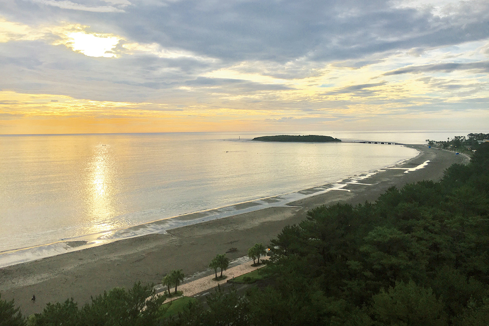
Префектуру Миядзаки на юго-востоке Кюсю японцы знают как край солнца, фруктов и сётю. Мы прошли по городу Миядзаки и его окрестностям двумя маршрутами: так, как их ездят шоколатье, который ищет здесь вкусы и запахи, и дизайнер мебели, который ищет людей.
Маршрут первый
Солнце, волны и фрукты
Кондитер-шоколатье из Камакуры, основатель собственной шоколадной марки, последние несколько лет постоянно возвращается в Миядзаки. По его словам, юг начинается прямо у трапа: в аэропорту встречают яркое солнце и тёплый ветер.
Первым делом он переодевается в шорты и футболку и едет на море. До пляжа Кидзакихама, где ловят волну сёрферы, от аэропорта минут двенадцать езды. Если волна хорошая, он заходит в воду, если моря нет, просто гуляет по берегу.
Пляж Кидзакихама
- Адрес
- префектура Миядзаки, город Миядзаки, Кумано, 2206-1
Удон после сёрфинга
После сёрфинга маршрут всегда один: «Камааги удон Ивами» у острова Аосима, в пяти минутах езды от пляжа. Камааги-удон это толстая пшеничная лапша, которую подают прямо из котла, в горячей воде, а макают в отдельную чашку с бульоном. Сначала он берёт жареную ставриду с лёгким привкусом карри, потом принимается за лапшу. Бульон в чашке понемногу разбавляется, и в конце его можно просто выпить до дна.
«Камааги удон Ивами»
- Адрес
- префектура Миядзаки, город Миядзаки, Аосима, 2-9-5
- Телефон
- +81 985-65-1218
- Часы работы
- 11:00–17:00 (последний заказ в 16:30)
- Выходные
- вторник, бывают дополнительные выходные
Фрукты и вода
Дальше он отправляется искать фрукты: цитрусовые, манго, личи, которые набрали много солнца. Миядзаки он называет фруктовым раем.
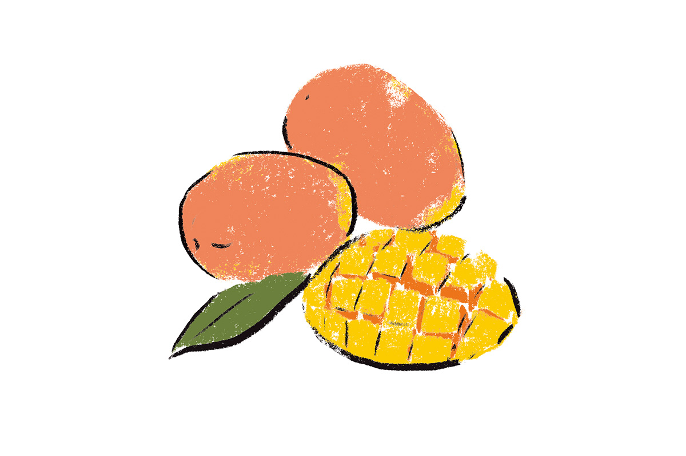
Для шоколада важнее всего аромат, поэтому у каждого фермера он спрашивает, откуда берут воду. Плоды, выращенные на хорошей воде, по его опыту, чаще всего получаются с густым вкусом и ярким запахом. В префектуре есть и вино: винодельня Tsuno Wine делает его из винограда сорта кэмпбелл эрли, с кислинкой и изящным ароматом. С шоколадом это вино даёт долгое, чувственное послевкусие. Фрукты, в которые фермер вложил годы работы, он соединяет с шоколадом и хочет, чтобы для покупателя это стало сюрпризом.
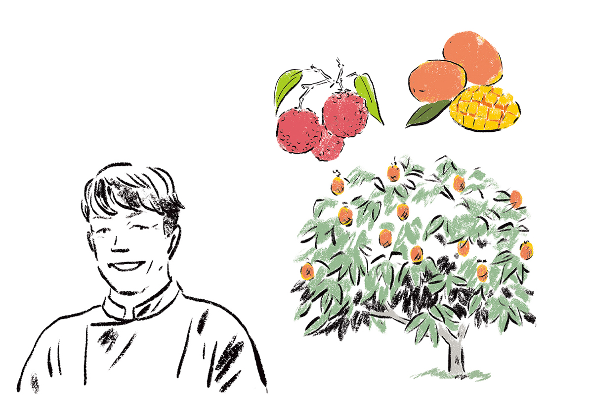
Сётю
Kuroki Honten в Таканабэ
Префектура Миядзаки производит больше всех в Японии сётю, крепкого дистиллята из ячменя, батата или риса, и хороших винокурен здесь много. Чаще всего шоколатье ездит в Kuroki Honten в городке Таканабэ, примерно в часе езды от Аосимы. Ему есть чему поучиться у того, как здесь относятся к делу: ячмень и батат, главное сырьё, винокурня выращивает сама.
Путь от сырья через брожение к сётю, по его словам, во многом похож на путь от какао-бобов к шоколаду. Ему близко и то, как здесь передают аромат и раскрывают возможности продукта.
К вечеру он возвращается к морю, в любимую гостиницу с видом на Аосиму, принимает онсэн и едет в город ужинать. Первый бокал обычно «Яманэко», ограниченный сётю Osuzuyama Distillery, второй винокурни Kuroki Honten, с содовой. Дальше ячменный сётю «Нака-нака» с содовой и лимоном под говядину Миядзаки.
Kuroki Honten
- Адрес
- префектура Миядзаки, уезд Кою, Таканабэ, Кита-Таканабэ, 776
- Телефон
- +81 983-23-0104
Карамэн на ночь
Завершает день «Гансо карамэн Котия», где подают карамэн, острую лапшу, которую в Миядзаки едят под конец вечера. Остроту выбирают по шкале от первого до двадцать пятого уровня, шоколатье заказывает пятый. Лапша и бульон, говорит он, уравновешены идеально, и лучшего завершения дня не придумать.
Новые вкусы для своих конфет он придумывает в дороге: увидеть тот же пейзаж и почувствовать те же запахи кожей значит сделать продукт гораздо лучше. А ещё в путешествии иногда встречаешь то, чего совсем не ждал. Утром, как он говорит, снова к солнцу.
«Гансо карамэн Котия»
- Адрес
- префектура Миядзаки, город Миядзаки, Тюо-дори, 7-27
- Телефон
- +81 985-20-0843
- Часы работы
- 18:00–01:00
- Выходные
- нерегулярные
Маршрут второй
Удон на завтрак и сакэ-мандзю
Дизайнер мебели из Токио, который хорошо знает ремесленников соседней префектуры Кагосима, в 2017 году всё чаще заглядывал и в Миядзаки. Его маршрут на два дня собран из любимых мест и людей, которые умеют создавать вокруг себя пространство.
День начинается с завтрака в «Камааги удон Куро». Её открыл повар, прошедший выучку в старой удонной Миядзаки. Лапшу делают из смеси двух сортов пшеницы и режут вручную, поэтому толщина чуть гуляет и в каждом укусе есть своя фактура. Бульон варят на грибах шиитакэ из Нитинана и сушёной скумбрии, и его запах будит аппетит раньше, чем приносят миску.
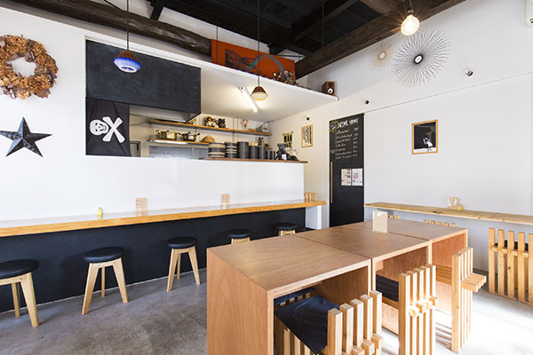
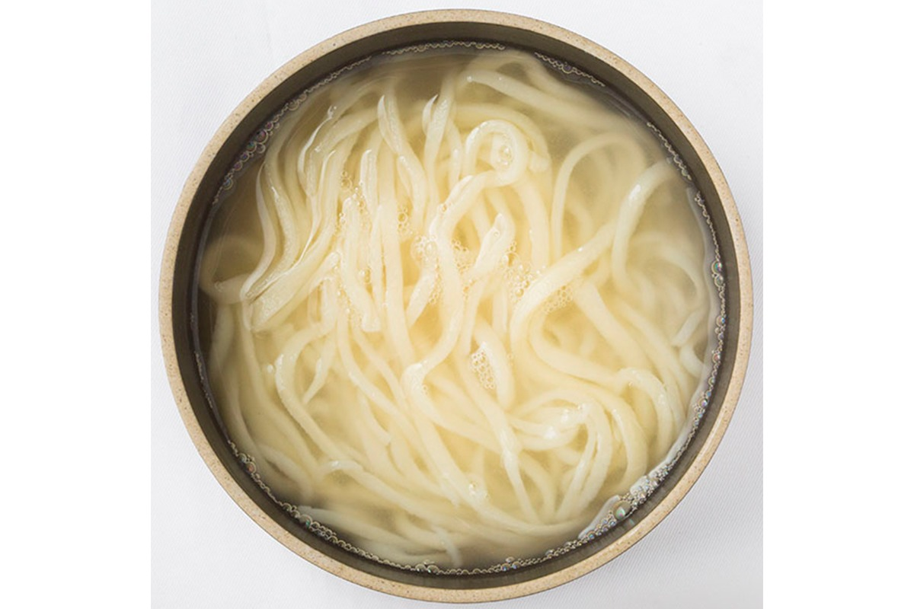
«В Миядзаки вообще принято есть удон по утрам. Лапша здесь мягкая, желудку легко даже наутро после застолья»
дизайнер мебели
«Камааги удон Куро»
- Адрес
- префектура Миядзаки, город Миядзаки, Татибана-дори-хигаси, 5-7-13
- Телефон
- +81 985-34-9569
- Часы работы
- 11:00–15:00, 18:00–21:00 (в субботу, воскресенье и праздники до 20:00)
- Выходные
- понедельник
Следом он заезжает в «Сантоку мандзю» за сакэ-мандзю, паровыми булочками на тесте с сакэ. В тот день ему повезло застать их прямо из пароварки. Такие, говорит дизайнер, едят и благодарят судьбу, что родились японцем. Одну он съедает в машине по дороге к океану.
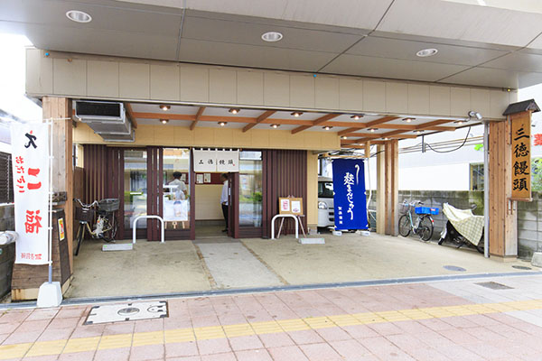
«Сантоку мандзю»
- Адрес
- префектура Миядзаки, город Миядзаки, Эхира-хигаси, 1-4-4
- Телефон
- +81 985-23-4500
- Часы работы
- 9:00–19:00
- Выходные
- воскресенье
Пляж
AOSHIMA BEACH PARK
Аосима, небольшой остров со святилищем у южной окраины города, давно популярное место для отдыха, но долгое время на здешнем пляже не было ни одного пляжного кафе. Это изменил AOSHIMA BEACH PARK. Его придумал предприниматель, переехавший в Миядзаки из Токио: на песке появились пять заведений, от известных по всей стране до лавок местных марок одежды. Получилось место, где настроение выходного дня доступно в любой будний день, и к 2017 году о новой пляжной культуре Аосимы заговорили и в Миядзаки, и в Кагосиме.
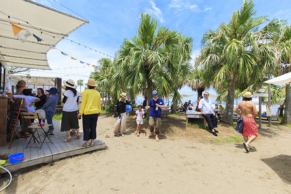
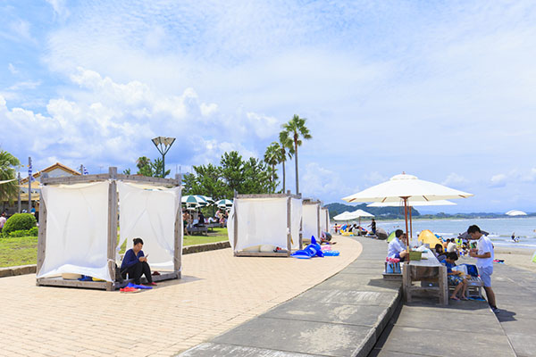
В 2017 году парк работал в сезон, с конца апреля по сентябрь. По данным мэрии Миядзаки, с 29 апреля 2022 года он открыт круглый год.
AOSHIMA BEACH PARK
- Адрес
- префектура Миядзаки, город Миядзаки, Аосима, 2-233
- Телефон
- +81 985-65-1055
- Даты
- круглый год (с 2022 года, по данным мэрии Миядзаки)
Обед
Booza: пельмени в бульоне и овощи
После пляжа дизайнер встречается со знакомым редактором и ведёт его в Booza, куда сам в тот год ходил постоянно. Здесь подают гёдза в бульоне и блюда из овощей.
«Хозяйка раньше работала в мире моды. И в том, как она готовит, и в том, как подбирает посуду, видно отличное чутьё»
дизайнер мебели
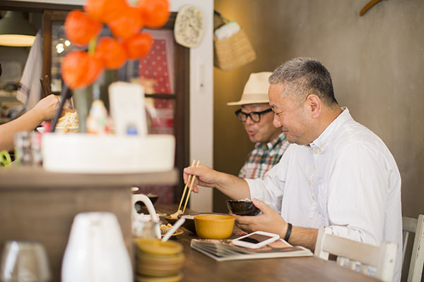
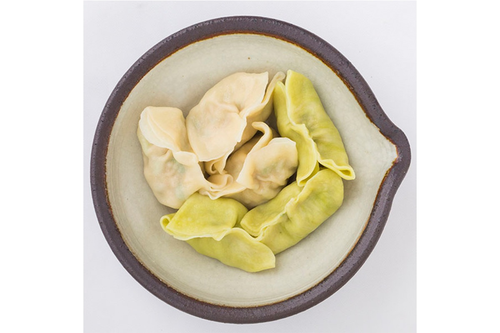
Booza
- Адрес
- префектура Миядзаки, город Миядзаки, Татибана-дори-хигаси, 3-2-19
- Телефон
- +81 985-28-8382
- Часы работы
- 11:30–15:00 (в субботу вечером по предварительной записи)
- Выходные
- суббота, воскресенье, праздники
- Сайт
- booza593.com
Ремёсла
Лак и индиго
Из Booza дизайнер едет к давнему знакомому, мастеру лака, в его мастерскую с выставочным залом GALLERY INDIVIDUAL. Мастер добавляет в лак серебряную фольгу и выводит на поверхности плавные переходы цвета, так что его посуда похожа то на керамику, то на металл. Зайти можно только по предварительной записи.
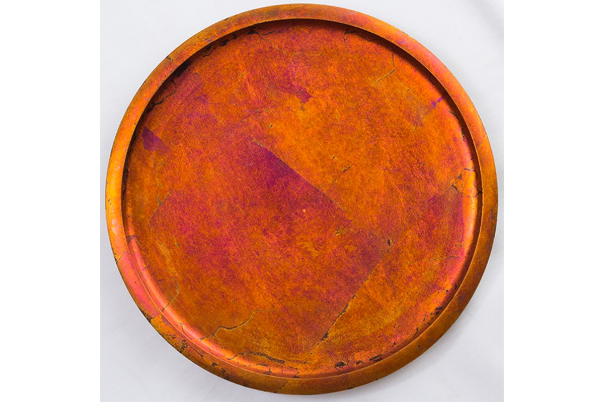
GALLERY INDIVIDUAL
- Адрес
- префектура Миядзаки, город Миядзаки, Мурасуми-тё, Харагути, 2607-1
- Телефон
- +81 985-88-1223
- Часы работы
- 13:00–19:00, по предварительной записи
- Выходные
- понедельник
Последняя точка дня находится уже за пределами города Миядзаки, на окраине города Миякондзё, на юго-западе префектуры. Здесь работает Aulico: мастерская, где окрашивают ткани и продают отобранные вещи для дома.
«Миякондзё не край индиго. Но когда смотришь на него, становится ясно: если есть желание, хорошую вещь можно сделать где угодно. Это придаёт смелости»
дизайнер мебели об основателе Aulico
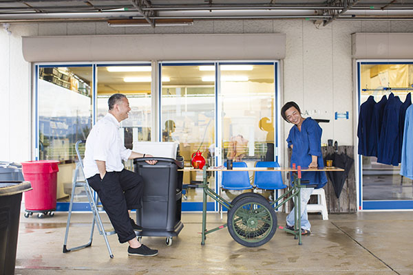
Aulico
- Адрес
- префектура Миядзаки, Миякондзё, Такадзё-тё, Хоманбо, 725-4
- Телефон
- +81 986-58-3898
- Часы работы
- 11:00–19:00
- Выходные
- без выходных
Фото: Косаку Китадзима.